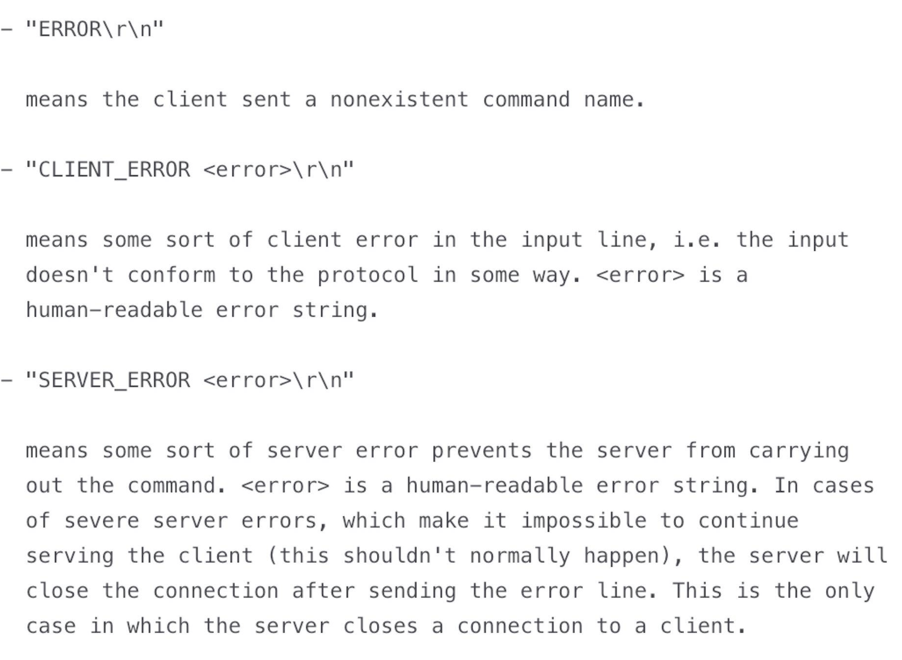

- 00 开篇词 OpenResty，为你打开高性能开发的大门.md.html
- 01 初探OpenResty的三大特性.md.html
- 02 如何写出你的“hello world”？.md.html
- 03 揪出隐藏在背后的那些子项目.md.html
- 04 如何管理第三方包？从包管理工具luarocks和opm说起.md.html
- 05 [视频]opm项目导读.md.html
- 06 OpenResty 中用到的 NGINX 知识.md.html
- 07 带你快速上手 Lua.md.html
- 08 LuaJIT分支和标准Lua有什么不同？.md.html
- 09 为什么 lua-resty-core 性能更高一些？.md.html
- 10 JIT编译器的死穴：为什么要避免使用 NYI ？.md.html
- 11 剖析Lua唯一的数据结构table和metatable特性.md.html
- 12 高手秘诀：识别Lua的独有概念和坑.md.html
- 13 [视频]实战：基于FFI实现的lua-resty-lrucache.md.html
- 14 答疑（一）：Lua 规则和 NGINX 配置文件产生冲突怎么办？.md.html
- 15 OpenResty 和别的开发平台有什么不同？.md.html
- 16 秒杀大多数开发问题的两个利器：文档和测试案例.md.html
- 17 为什么能成为更好的Web服务器？动态处理请求和响应是关键.md.html
- 18 worker间的通信法宝：最重要的数据结构之shared dict.md.html
- 19 OpenResty 的核心和精髓：cosocket.md.html
- 20 超越 Web 服务器：特权进程和定时任务.md.html
- 21 带你玩转时间、正则表达式等常用API.md.html
- 22 [视频]从一个安全漏洞说起，探寻API性能和安全的平衡.md.html
- 23 [视频]导读lua-resty-requests：优秀的lua-resty-_是如何编写的？.md.html
- 24 实战：处理四层流量，实现Memcached Server.md.html
- 25 答疑（二）：特权进程的权限到底是什么？.md.html
- 26 代码贡献者的拦路虎：test__nginx 简介.md.html
- 27 test__nginx 包罗万象的测试方法.md.html
- 28 test__nginx 还可以这样用？.md.html
- 29 最容易失准的性能测试？你需要压测工具界的“悍马”wrk.md.html
- 30 答疑（三）如何搭建测试的网络结构？.md.html
- 31 性能下降10倍的真凶：阻塞函数.md.html
- 32 让人又恨又爱的字符串操作.md.html
- 33 性能提升10倍的秘诀：必须用好 table.md.html
- 34 特别放送：OpenResty编码指南.md.html
- 35 [视频]实际项目中的性能优化：ingress-nginx中的几个PR解读.md.html
- 36 盘点OpenResty的各种调试手段.md.html
- 37 systemtap-toolkit和stapxx：如何用数据搞定“疑难杂症”？.md.html
- 38 [视频]巧用wrk和火焰图，科学定位性能瓶颈.md.html
- 39 高性能的关键：shared dict 缓存和 lru 缓存.md.html
- 40 缓存与风暴并存，谁说缓存风暴不可避免？.md.html
- 41 lua-resty-_ 封装，让你远离多级缓存之痛.md.html
- 42 如何应对突发流量：漏桶和令牌桶的概念.md.html
- 43 灵活实现动态限流限速，其实没有那么难.md.html
- 44 OpenResty 的杀手锏：动态.md.html
- 45 不得不提的能力外延：OpenResty常用的第三方库.md.html
- 46 答疑（四）：共享字典的缓存是必须的吗？.md.html
- 47 微服务API网关搭建三步曲（一）.md.html
- 48 微服务API网关搭建三步曲（二）.md.html
- 49 微服务API网关搭建三步曲（三）.md.html
- 50 答疑（五）：如何在工作中引入 OpenResty？.md.html
- 结束语 行百里者半九十.md.html
- 捐赠
24 实战：处理四层流量，实现Memcached Server
你好，我是温铭。
在前面几节课中，我们介绍了不少处理请求的 Lua API ，不过它们都是和七层相关的。除此之外，OpenResty 其实还提供了 stream-lua-nginx-module 模块来处理四层的流量。它提供的指令和 API ，与 lua-nginx-module 基本一致。
今天，我就带你一起用 OpenResty 来实现一个 memcached server，而且大概只需要 100 多行代码就可以完成。在这个小的实战中，我们会用到不少前面学过的内容，也会带入一些后面测试和性能优化章节的内容。
所以，我希望你能够明确一点，我们这节课的重点，不在于你必须读懂每一行代码的具体作用，而是你要从需求、测试、开发等角度，把 OpenResty 如何从零开发一个项目的全貌了然于心。
原始需求和技术方案
在开发之前，我们都需要明白需求是什么，到底是用来解决什么问题的，否则就会在迷失在技术选择中。比如看到我们今天的主题，你就应该先反问一下自己，为什么要实现一个 memcached server 呢？直接安装一个原版的 memcached 或者 redis 不就行了吗？
我们知道，HTTPS 流量逐渐成为主流，但一些比较老的浏览器并不支持 session ticket，那么我们就需要在服务端把 session ID 存下来。如果本地存储空间不够，就需要一个集群进行存放，而这个数据又是可以丢弃的，所以选用 memcached 就比较合适。
这时候，直接引入 memcached ，应该是最简单直接的方案。但出于以下几个方面的考虑，我还是选择使用 OpenResty 来造一个轮子：
- 第一，直接引入会多引入一个进程，增加部署和维护成本；
- 第二，这个需求足够简单，只需要 get 和 set 操作，并且支持过期即可；
- 第三，OpenResty 有 stream 模块，可以很快地实现这个需求。
既然要实现 memcached server，我们就需要先弄明白它的协议。memcached 的协议可以支持 TCP 和 UDP，这里我选择 TCP，下面是 get 和 set 命令的具体协议：
Get
根据 key 获取 value
Telnet command: get <key>*\r\n
示例：
get key
VALUE key 0 4 data END
Set
存储键值对到 memcached 中
Telnet command：set <key> <flags> <exptime> <bytes> [noreply]\r\n<value>\r\n
示例：
set key 0 900 4 data
STORED
除了 get 和 set 外，我们还需要知道 memcached 的协议的“错误处理”是怎么样做的。“错误处理”对于服务端的程序是非常重要的，我们在编写程序时，除了要处理正常的请求，也要考虑到各种异常。比如下面这样的场景：
- memcached 发送了一个get、set 之外的请求，我要怎么处理呢？
- 服务端出错，我要给 memcached 的客户端一个什么样的反馈呢？
同时，我们希望写出能够兼容 memcached 的客户端程序。这样，使用者就不用区分这是 memcached 官方的版本，还是 OpenResty 实现的版本了。
下面这张图出自memcached 的文档，描述了出错的时候，应该返回什么内容和具体的格式，你可以用做参考：

现在，再来确定下技术方案。我们知道，OpenResty 的 shared dict 可以跨各个 worker 来使用，把数据放在 shared dict 里面，和放在 memcached 里面非常类似——它们都支持 get 和 set 操作，并且在进程重启后数据就丢失了。所以，使用 shared dict 来模拟 memcached 是非常合适的，它们的原理和行为都是一致的。
测试驱动开发
接下来就要开始动工了。不过，基于测试驱动开发的思想，在写具体的代码之前，让我们先来构造一个最简单的测试案例。这里我们不用 test::nginx 框架，毕竟它的上手难度也不低，我们不妨先用熟悉的 resty 来手动测试下：
$ resty -e 'local memcached = require "resty.memcached"
local memc, err = memcached:new()
memc:set_timeout(1000) -- 1 sec
local ok, err = memc:connect("127.0.0.1", 11212)
local ok, err = memc:set("dog", 32)
if not ok then
ngx.say("failed to set dog: ", err)
return
end
local res, flags, err = memc:get("dog")
ngx.say("dog: ", res)'
这段测试代码，使用 lua-rety-memcached 客户端库发起 connect 和 set 操作，并假设 memcached 的服务端监听本机的 11212 端口。
看起来应该没有问题了吧。你可以在自己的机器上执行一下这段代码，不出意外的话，会返回 failed to set dog: closed 这样的错误提示，因为此时服务并没有启动。
到现在为止，你的技术方案就已经明确了，那就是使用 stream 模块来接收和发送数据，同时使用 shared dict 来存储数据。
衡量需求是否完成的指标也很明确，那就是跑通上面这段代码，并把 dog 的实际值给打印出来。
搭建框架
那还等什么，开始动手写代码吧！
我个人的习惯，是先搭建一个最小的可以运行的代码框架，然后再逐步地去填充代码。这样的好处是，在编码过程中，你可以给自己设置很多小目标；而且在完成一个小目标后，测试案例也会给你正反馈。
让我们先来设置好 Nginx 的配置文件，因为stream 和 shared dict 要在其中预设。下面是我设置的配置文件：
stream {
lua_shared_dict memcached 100m;
lua_package_path 'lib/?.lua;;';
server {
listen 11212;
content_by_lua_block {
local m = require("resty.memcached.server")
m.run()
}
}
}
你可以看到，这段配置文件中有几个关键的信息：
- 首先，代码运行在 Nginx 的 stream 上下文中，而非 HTTP 上下文中，并且监听了 11212 端口；
- 其次，shared dict 的名字为 memcached，大小是 100M，这些在运行期是不可以修改的；
- 另外，代码所在目录为
lib/resty/memcached, 文件名为server.lua, 入口函数为run()，这些信息你都可以从lua_package_path和content_by_lua_block中找到。
接着，就该搭建代码框架了。你可以自己先动手试试，然后我们一起来看下我的框架代码：
local new_tab = require "table.new"
local str_sub = string.sub
local re_find = ngx.re.find
local mc_shdict = ngx.shared.memcached
local _M = { _VERSION = '0.01' }
local function parse_args(s, start)
end
function _M.get(tcpsock, keys)
end
function _M.set(tcpsock, res)
end
function _M.run()
local tcpsock = assert(ngx.req.socket(true))
while true do
tcpsock:settimeout(60000) -- 60 seconds
local data, err = tcpsock:receive("*l")
local command, args
if data then
local from, to, err = re_find(data, [[(\S+)]], "jo")
if from then
command = str_sub(data, from, to)
args = parse_args(data, to + 1)
end
end
if args then
local args_len = #args
if command == 'get' and args_len > 0 then
_M.get(tcpsock, args)
elseif command == "set" and args_len == 4 then
_M.set(tcpsock, args)
end
end
end
end
return _M
这段代码，便实现了入口函数 run() 的主要逻辑。虽然我还没有做异常处理，依赖的 parse_args、get 和 set 也都是空函数，但这个框架已经完整表达了memcached server 的逻辑。
填充代码
接下来，让我们按照代码的执行顺序，逐个实现这几个空函数。
首先，我们可以根据 memcached 的协议文档，解析 memcached 命令的参数：
local function parse_args(s, start)
local arr = {}
while true do
local from, to = re_find(s, [[\S+]], "jo", {pos = start})
if not from then
break
end
table.insert(arr, str_sub(s, from, to))
start = to + 1
end
return arr
end
这里，我的建议是，先用最直观的方式来实现一个版本，不用考虑任何性能的优化。毕竟，完成总是比完美更重要，而且，基于完成的逐步优化才可以趋近完美。
接下来，我们就来实现下 get 函数。它可以一次查询多个键，所以下面代码中我用了一个 for 循环：
function _M.get(tcpsock, keys)
local reply = ""
for i = 1, #keys do
local key = keys[i]
local value, flags = mc_shdict:get(key)
if value then
local flags = flags or 0
reply = reply .. "VALUE" .. key .. " " .. flags .. " " .. #value .. "\r\n" .. value .. "\r\n"
end
end
reply = reply .. "END\r\n"
tcpsock:settimeout(1000) -- one second timeout
local bytes, err = tcpsock:send(reply)
end
其实，这里最核心的代码只有一行：local value, flags = mc_shdict:get(key)，也就是从 shared dict 中查询到数据；至于其余的代码，都在按照 memcached 的协议拼接字符串，并最终 send 到客户端。
最后，我们再来看下 set 函数。它将接收到的参数转换为 shared dict API 的格式，把数据储存了起来；并在出错的时候，按照 memcached 的协议做出处理：
function _M.set(tcpsock, res)
local reply = ""
local key = res[1]
local flags = res[2]
local exptime = res[3]
local bytes = res[4]
local value, err = tcpsock:receive(tonumber(bytes) + 2)
if str_sub(value, -2, -1) == "\r\n" then
local succ, err, forcible = mc_shdict:set(key, str_sub(value, 1, bytes), exptime, flags)
if succ then
reply = reply .. “STORED\r\n"
else
reply = reply .. "SERVER_ERROR " .. err .. “\r\n”
end
else
reply = reply .. "ERROR\r\n"
end
tcpsock:settimeout(1000) -- one second timeout
local bytes, err = tcpsock:send(reply)
end
另外，在填充上面这几个函数的过程中，你可以用测试案例来做检验，并用 ngx.log 来做 debug。比较遗憾的是，OpenResty 中并没有断点调试的工具，所以我们都是使用 ngx.say 和 ngx.log 来调试的，在这方面可以说是还处于刀耕火种的时代。
写在最后
这个实战项目到现在就接近尾声了，最后，我想留一个动手作业。你可以把上面 memcached server 的实现代码，完整地运行起来，并通过测试案例吗？
今天的作业题估计要花费你不少的精力了，不过，这还是一个原始的版本，还没有错误处理、性能优化和自动化测试，这些就要放在后面继续完善了。我也希望通过后面内容的学习，你最终能够完成一个完善的版本。
如果对于今天的讲解或者自己的实践有什么疑惑，欢迎你留言和我讨论。也欢迎你把这篇文章转发给你的同事朋友，我们一起实战，一起进步。
© 2019 - 2023 Liangliang Lee. Powered by gin and hexo-theme-book.